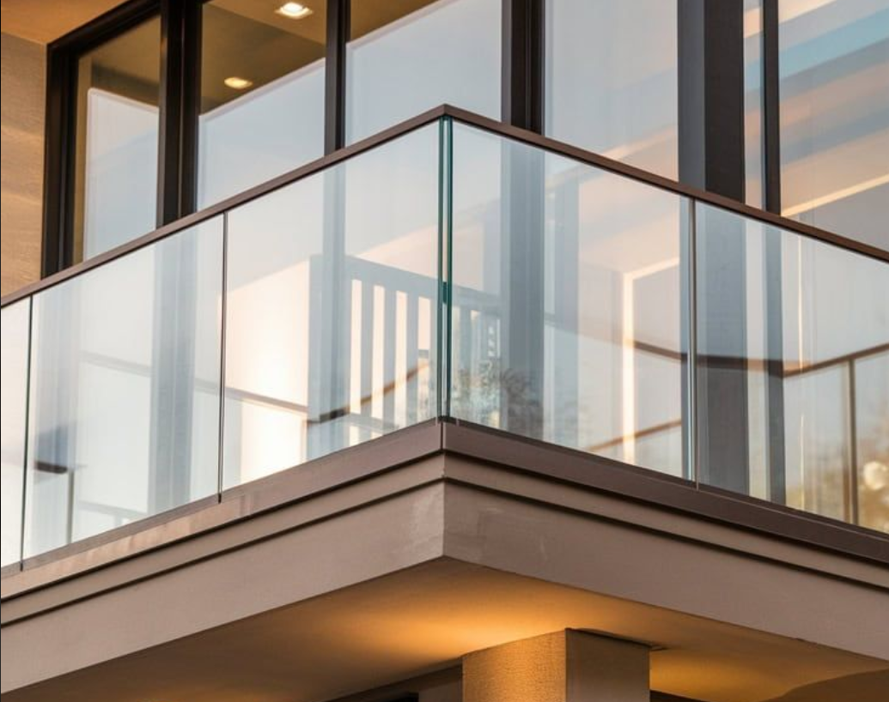
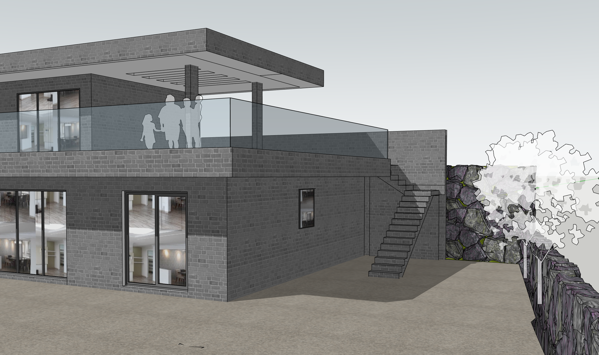
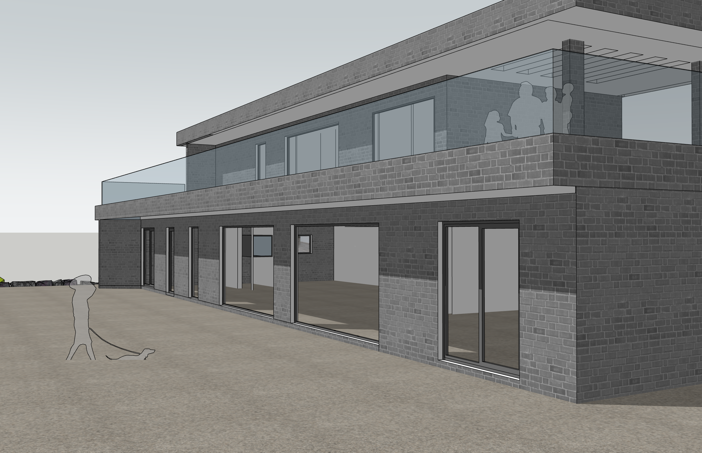
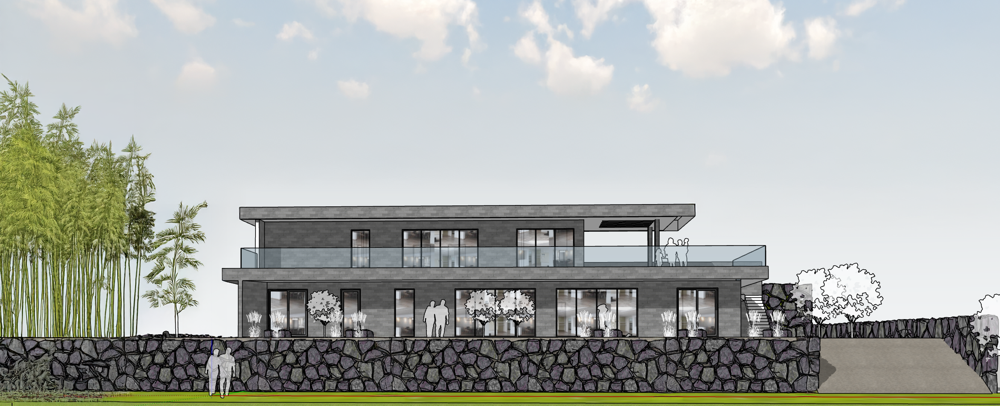
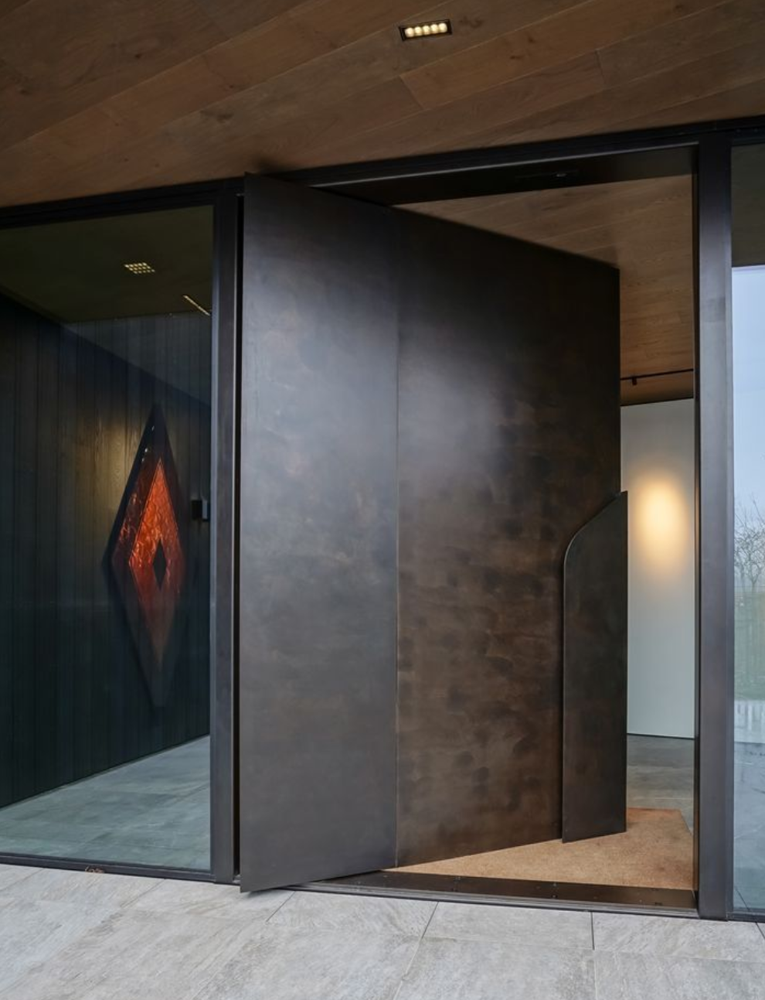
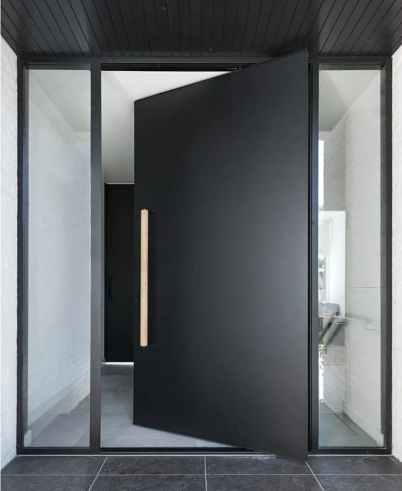
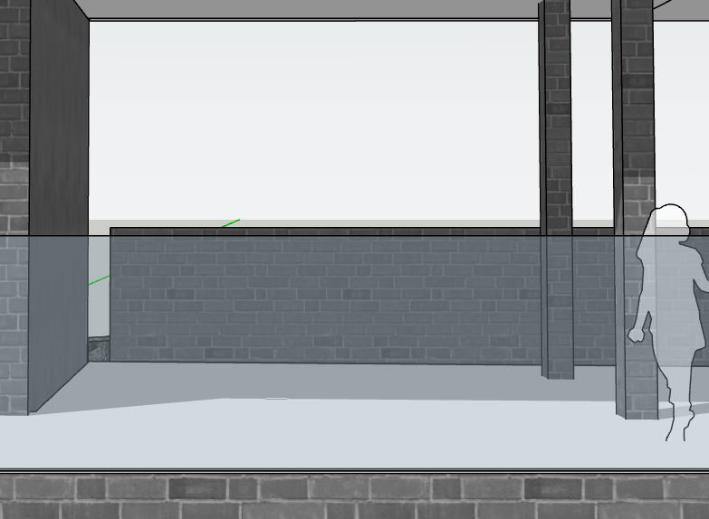
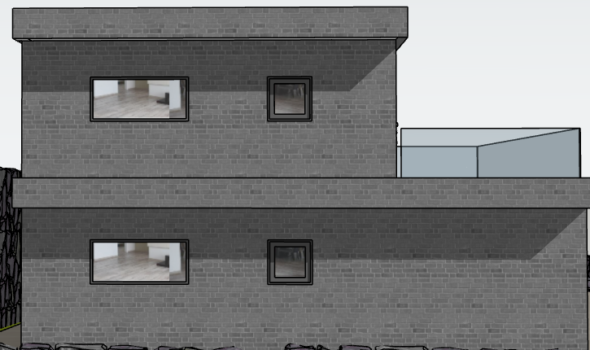

건축가님, 앞서 전달드린 2차 설계 요청 사항에 더하여, 제주도라는 위치와 환경, 건축물의 장기적 유지보수, 그리고 저희가 추구하는 건축 스타일에 대한 심도 있는 검토를 통해 아래와 같이 구체적인 결정 및 추가 수정 사항을 전달드립니다.
1. 현관 접근성 및 배수 처리
- 건물 앞 단차를 제거 (2층 테라스도 마찬가지로 제거)하고 건물 바닥 면과 외부바닥 높이를 일치시켜 주십시오.
- 추후 빗물 누수 방지를 위해 사람이 인지하지 못할 정도의 미세한 구배를 두어 자연 배수를 유도해 주십시오.

2. 건물 전면부 바닥 마감
- 건물 전면 바닥은 잔디 마감을 제외하고, 석재 또는 시멘트 계열로 마감해 주십시오.
3. 좌측 처마 및 테라스 계획 (수정)
- 건물 좌측 부분에 처마는 형성하되, 테라스는 조성하지 않는 것으로 요청드립니다.
- 처마를 통해 건물 좌측면이 명확하고 깔끔하게 마무리될 수 있도록 디자인 부탁드립니다. (관리 부담 및 누수 위험 감소 목적)
- 몇가지 디자인 제안을 부탁드립니다
- 측면 처마가 배면부만큼 짧은 경우 디자인적으로 좀더 완성도 있을것 같은데 가능하다면 그게 더 좋을 겉 같고 그럴 경우 생길 문제도 의견 주시면 좋겠습니다.

4. 난간 디자인 및 재질
- 난간은 안전성이 확실히 보장되는 강화유리 펜스를 최우선으로 적용해 주십시오. (제주 해안의 강풍 및 외부 충격에 대한 내구성, 파손 시 안전성 등 종합적 검토 필요)
- 난간에 바람길이 있어야 할것 같고, 사진과 같이 프레임을 위쪽과 아래쪽에 잡아주었으면 합니다.아래만 있으면 약하고 유리와 유리 사이에 있으면 뷰를 망치고 디자인 완성도가 떨어질것 같습니다.
- 만약 적합한 강화유리 펜스 제품을 찾기 어렵거나 안전성에 대한 우려가 해소되지 않을 경우, 건물 외장재와 동일한 재질 및 디자인으로 통일하여 일체감 및 안정성을 확보하는 방안을 고려해 주십시오.

5. 우측 외부 계단 디자인 변경 및 기능성 확보
- 현재 우측 건물 외부 계단의 줄리엣 발코니 형태 구조물과 벽을 철거해 주십시오.
- 해당 공간을 외장재로 마감하는 대신, 개방형 레일(난간)을 설치하여 안전 확보 및 통풍을 원활하게 해주십시오. (계단 하부 공간 사용성 증진 및 보일러 연료 운반 용이성 확보 목적)

6. 창호 계획: 개방감 및 조망 극대화
- 전면부는 1, 2층 모두 통창(2층에서 앉았을 때 반창일 경우 거실에서 뷰가 아예 안 보입니다.)으로, 측면부와 배면부는 1, 2층 모두 반창으로 시공해 주십시오.
- 창호 프레임의 분할을 최소화 및 시선이 걸리는 부분을 얇게(바깥쪽 프레임은 크더라도도) 하여 시야의 단절 없는 연속적인 뷰(파노라믹뷰)를 확보해 주십시오.
- 프레임과 건물 외장재의 색은 통일하여 외부에서 봤을때 [건물외장재+유리] 2가지 소재로만 보이도록 해주십시오

7. 드레스룸 창문 설치
- 드레스룸은 빛이 안 들어오기 때문에 환기가 필수적이라 후면에 창문을 설치하여 자연 채광 및 환기 기능을 확보해 주십시오. (오픈형 시스템 행거 설치 예정)
8. 외장재 선택 (최종 결정 및 구체화)
- 제외 대상: 스타코, 드라이비트, 현무암 (습기 및 누수 우려).- 현무암 판재도 습기를 많이 머금어서 외장재로 적합하지 않은 것으로 알고있습니다
- 최종 고려 자재: 벽돌, 석재, 세라믹사이딩 등
- 색상 및 질감: 제주 현무암과 유사한 질감 및 어두운 계열의 색상(예: 다크 그레이, 차콜, 회갈색 등)으로 부탁드립니다.
- 디자인 의도: 건물 전체가 아래쪽 벽과 뒤옹벽과 함께 하나의 견고한 덩어리(Mass)처럼 보이도록 연출하고, 단순하면서도 의도된 현대적인 미학을 구현하고자 합니다.
- 건축가님께 요청: 위 결정에 부합하는 고품질 벽돌(종류, 제품)을 추천해 주시고, 예상되는 문제점(예: 백화현상, 특정 색상 벽돌의 장기적 변색 가능성 등)과 그에 대한 최적의 예방 및 대응 방안(시공법, 줄눈 처리, 발수 처리 등)에 대한 전문적인 조언을 구합니다.


9. 대문 크기
- 신발장의 깊이가 한쪽에 대략 350mm 정도일 것으로 예상하고 있습니다. 2400mm에서 양쪽합해 700mm, 마감 200mm를 제외하면 현관 내부 폭이 약 1500mm 정도일 텐데, 현재 도면상 대문의 사이즈가 상대적으로 작아 보입니다. 대형 피봇 현관문 등을 설치하여 대문 크기가 좀 더 커지고 웅장한 느낌을 주었으면 좋겠습니다.


10. 2층 좌측, 배면부 콘크리트 구조 삭제
- 2층의 좌측 테라스 쪽과 배면부에 있는 콘크리트 구조물(혹은 장식적 요소로 판단되는 부분)을 삭제하여 더욱 깔끔하고 미니멀한 외관을 만들어 주십시오.


종합 의견:
저희가 추구하는 주택의 목적은 제주도의 자연환경과 조화를 이루면서도, 모던하게 간결함과 기능적 효율성을 담아내는 것입니다. 특히 이에 대응하여 건물의 내구성과 유지관리 용이성을 확보하는 것을 매우 중요하게 생각하고 있습니다. 건축가님의 전문적인 지식과 경험을 통해 더욱 완성도 높은 설계로 발전하기를 기대합니다. 수정 및 구체화된 내용에 대한 건축가님의 고견을 부탁드립니다.